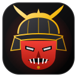

Sesi
MAX MODE · v2.11 · by Whempy & Dhon0Found
0Saved
Video siap download
Settings
Auto-download
Save new videos automatically
Mode Ganas
Pilih Seedance 2.5 + durasi ASLI maks di menu Dola, inject prompt, auto-jawab
Kunci model Seedance 2.5
Paksa 1.0/2.0 → 2.5 di payload & tolak kartu downgrade server
Auto-terima 2×15s
Jika Dola tetap menolak 30s, jawab "Ya" otomatis (hemat kredit, tanpa loop)
Duration
30s (1 clip)
Quality
Max HD
Watermark
Off
Saat Auto-download mati, video dikumpulkan di latar — ketuk Scan chat lalu pilih video yang mau disimpan dari daftar di atas.
Akun Tersimpan
Password dienkripsi & disimpan lokal di HP ini (Android Keystore) — tidak pernah dikirim ke server. Klik Isi ke Google saat halaman login Google terbuka.
Debug
Kirim log debug
Kalau ada yang tidak jalan, kirim log ini ke Whempy & Dhon